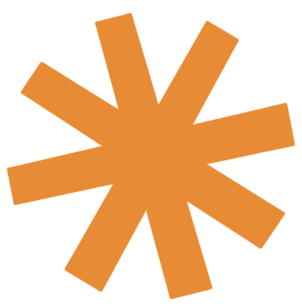
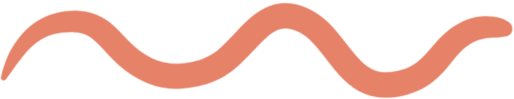
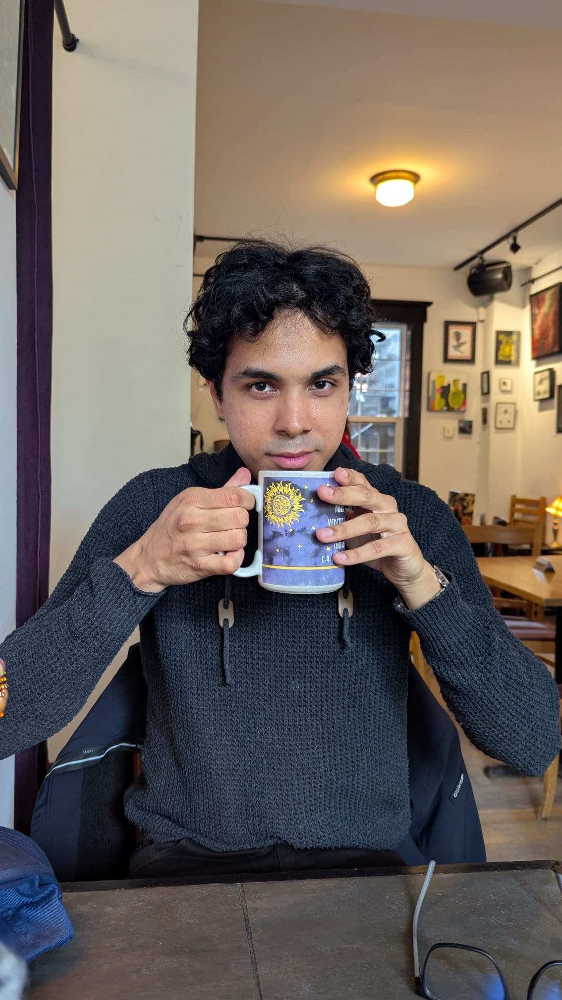
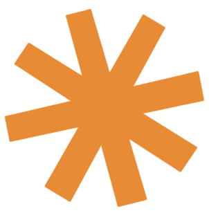
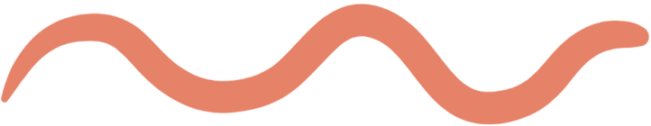
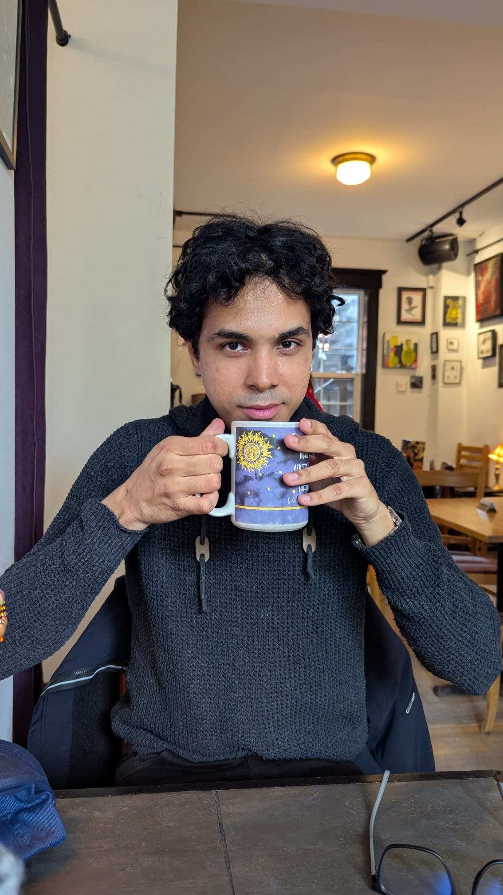
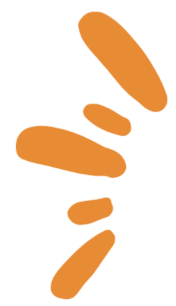 Salut, je suis Patrick!
Je suis diplômé en Sciences Biologiques et de la Vie.
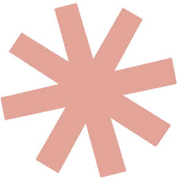
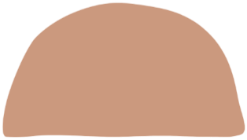
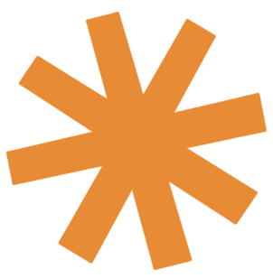
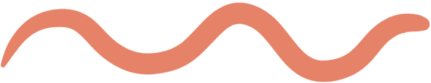
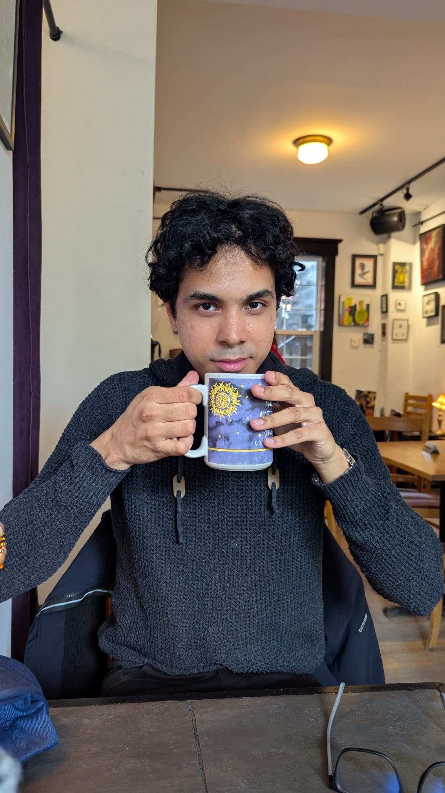
Je suis diplômé en Sciences biologiques et de la vie de l'Université d'Ottawa, avec une spécialisation en immersion française. Tout au long de mon parcours universitaire, j'ai cultivé une passion pour l'éducation, la recherche scientifique et l'engagement communautaire. Mon parcours m'a permis d'explorer des domaines variés comme la biologie moléculaire, la biologie cellulaire, la botanique, ainsi que l'apprentissage automatique appliqué à la chimie. J'ai également enrichi ma formation avec des cours en administration des affaires, afin d'acquérir une vision plus globale et polyvalente du monde professionnel. En parallèle de mes études, j'ai contribué à des initiatives bénévoles qui me tiennent à cœur : sensibilisation à la santé mentale au Centre de santé et de mieux-être, ateliers éducatifs sur les neurosciences dans des écoles primaires, tutorat, et rédaction de contenu scientifique pour des compétitions étudiantes. Mes intérêts de recherche ont mené à une étude publiée en flexibilité comportementale en collaboration avec le département de neurosciences de l'Université d'Ottawa, où j'ai contribué à l'analyse et à l'interprétation des données. On me décrit souvent comme une personne rigoureuse, curieuse, organisée et toujours prête à apprendre. Je recherche des opportunités où je peux allier mes compétences scientifiques, ma créativité et mes qualités humaines — que ce soit en éducation, en administration, en communication ou en recherche. En dehors du travail, j'aime lire, cuisiner, et remplir mes carnets de croquis ! ☺️

J'aborde le travail avec concentration, adaptabilité et une grande attention aux détails. Ma formation en sciences de la vie, combinée à mon expérience bénévole, m'a appris à rester organisé, à communiquer clairement et à exceller dans des environnements dynamiques. Je valorise la collaboration et je tire fierté du soutien que j'apporte à ceux qui m'entourent, que ce soit dans un laboratoire, un bureau ou sur le terrain. Je reste calme sous pression, j'écoute activement et je vise à créer des interactions positives dans tous les contextes. Ma passion pour l'éducation et la science me pousse à partager mes connaissances et à inspirer les autres. Je suis prêt à contribuer dans l'enseignement au cégep, l'administration, la recherche ou tout autre domaine qui peut bénéficier de ma formation scientifique 😊
Conseiller mieux-être | 2024-2025
💚 Impact : accessibilité accrue aux services de soutien

Analyste psychométrique | 2024
📊 Impact : décisions pédagogiques guidées par des données fiables

Conférencier bénévole | 2024
🧠 Impact : inspiration des jeunes pour les carrières STEM
Vous souhaitez collaborer ou en savoir plus ? Contactez-moi !
Écrire à Patrick